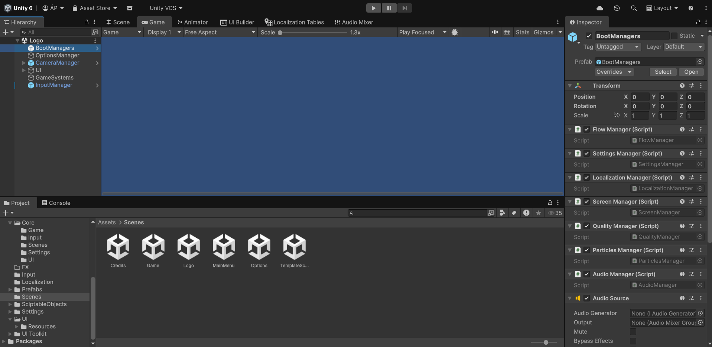

Tool Description
This is a Unity template for 2D games. This template includes the game’s menu flow, which includes the main menu, the options menu, the game screen, the pause screen, a credits screen and a start screen for displaying the team’s logo.
Tasks performed
Menu flow
I've created a complete menu flow which allows to navigate through a main menu, an options menu, the main game, a pause screen, a credits screen and a logo screen displayed when the game is started.
Full controller support
The template allows player to navigate through game menus by gamepad, keyboard or mouse. This feature was developed through the new Unity Input System, which allows to change dynamically player input mode and configure it easily.
Menu scalability
To create the game menus, I've used the UXML Schema Unity system. This system provides scalability to game menus and makes it easier to edit them.
Performance
Game responsabilities were separated in isolated components, each one with its responsability. Game components which are used in all Unity scenes are retained between scenes using a Singleton pattern.